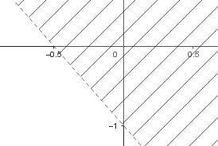

Wie löse ich Matheaufgaben?
Ungleichungen
Sie sehen ein gelbes Eingabefeld und die
Schalter: Prüfen und Lösung.
Tragen Sie Ihr Ergebnis ein, prüfen Sie es
oder starten Sie eine Lösung.
Aufgabe 62 Zeichnen Sie die Graphen der Ungleichungen: a) 3x + 4y ≤ 12 b) 7x - 3y > 21 c) 2(2,5x - 4) > 5y - 1 In der Lösungsmenge welcher Aufgabe liegt der Punkt (-3|-15)? In , oder ?
Aufgabe 63 Zeichnen Sie die Graphen der Ungleichungen: a) y ≥ 0,5x + 1 b) y ≤ - 2x + 5
Aufgabe 64 Wie lautet die lineare Ungleichung a) ausschließlich der Randgeraden?  y > x - 1 b) einschließlich der Randgeraden?
Aufgabe 65 Ein Zweiradgeschäft kauft Fahrräder und Mopeds unter folgenden Bedingungen auf Vorrat. Das Lager fasst 18 Zweiräder. Es sollen mindestens 8 Fahrräder und 3 Mopeds sein. Ein Fahrrad kostet 200 €, ein Moped 800 €. Es stehen 9 000 € zur Verfügung. Stellen Sie ein Ungleichungssystem auf, und zeichnen Sie das Planungsgebiet.
Aufgabe 66 Für eine Feier mit 26 Personen stehen für Getränke 25 € zur Verfügung. Eine Dose Orangensaft kostet 0,75 €, eine Dose Limonade 0.85 €. Die Anzahl der Dosen soll größer als die der Teilnehmer sein. Ist diese Kombination möglich? O 20 L 10
Aufgabe 67 Für den Abtransport von 31 t Bauschutt stehen 2 Lkws zur Verfügung. Der eine kann 3 t, der andere 8 t laden. Geben Sie 3 Möglichkeiten für den Lkw Einsatz an, wenn höchstens 10 Fahrten vorgeschrieben sind.
Aufgabe 68 Eine Autofabrik stellt höchstens 400 Fahrzeuge pro Tag her, davon mindestens 200 Pkw und 40 Kombis. Zeichnen Sie das Planungsgebiet. Liegt die Kombination 200 Pkw und 200 Kombis im Planungsgebiet?
Aufgabe 69 Ein Landwirt baut auf einer Fläche von maximal 30 ha Weizen und Kartoffeln an. Er will auf mindestens 10 ha Weizen und auf 5 ha Kartoffeln anbauen. Zeichnen Sie das Planungsgebiet.
Aufgabe 70 Eine Getränkefirma kann höchstens 2 000 Flaschen pro Tag abfüllen. Vom Getränk A können 1 200 Flaschen, vom Getränk B 1 600 Flaschen abgefüllt werden. Welche Kombination (A|B) ist nicht möglich? a) (1 000|600), b) (400|1 600), c) (800| 1 200), d) (1 400|1 400)
Aufgabe 71 An Drehbank 1 und Drehbank 2 werden Werkstücke W und U bearbeitet. Drehbank 1 braucht für W 2,5 hfür U 4,75 h. Drehbank 2 braucht für W 3 h für U 4,5 h. Wie viel W und U können in 24 h hergestellt werden?
Aufgabe 72 Für die Herstellung von 2 Modellen K1 und K2 auf den Bearbeitungsmaschinen M1, M2 und M3 ist der Zeitbedarf in h in der Matrix dargestellt: M1 M2 M3 K1 1 2/3 1 K2 1 4/3 2/3 Wie viele K1 und K2 können auf M1 und M2 in 8 h hergestellt werden? Es sind K1 und 8 K2.
Aufgabe 73 Zu einem Lehrbuch für 16 € gibt es eine CD mit Aufgaben und Lösungen zu 48 €. Eine Buchhandlung will mindestens 15 CDs und 25 Lehrbücher einkaufen, aber nicht mahr als 2 400 € ausgeben. Zeichnen Sie das Planungsgebiet.
Aufgabe 74 Für Gardinen gibt es Stoffballen erster und zweiter Qualität. Der von erster Qualität liefert 20 m, der andere 25 m. Für die Verarbeitung von Ballen erster Qualität braucht man 18 h, für die anderen 27 h. In 360 Stunden sollen nicht mehr als 350 m verarbeitet werden. Sind 5 Ballen erster Qualität und 10 zweiter in dieser Zeit zu schaffen?
Aufgabe 75 Ein Einfamilienhaus kostet bei einer Baufirma 200 000 €, ein Zweifamilienhaus 250 000 €. Es stehen Grundstücke von 1 000 m² für ein Einfamilienhaus und 1 500 m² für ein Zweifamilienhaus zur Verfügung. Das Baugelände ist 15 000 m² groß, und für den Bau der Häuser sind maximal 3 000 000 € vorgesehen. Zeichnen Sie das Planungsgebiet.